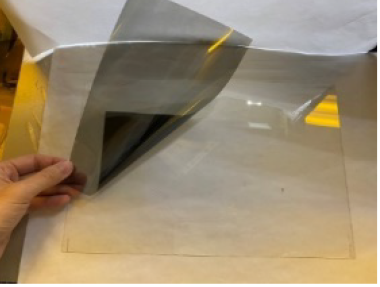

| 偏光片用光誘發拆解膠 The Innovative Near-IR Activated Debonding Adhesive for Disassembly of Polarizer Module |
| 現有偏光片光學膠材為一次性環氧壓克力材料，無法拆 解，且重工剝除有殘膠、偏光片受損必須棄置，開發光誘 發拆解黏著材料技術，於光學膠材中導入 NIR 增感結 構，材料於 NIR 曝光下可引發光化學反應達到解膠效 果，可應用於偏光片貼合，拆解時僅需以近紅外光曝光即 可將偏光片與彩色濾光片分離，達到易拆解及材料可回 用，拆解過程無熱效應(≦50°C)不傷材料、解膠快速 (≦ 5mins) 。 The commercial PSA is permanent bonding to cell glass and polarizer, which makes the polarizer were difficult removed from glass to reuse or recycle LCD panel. An innovative near-IR activated debonding adhesive were developed to solve the above panel recycle issue. When dismantling, infrared light could penetrate the polarizer module inducing photochemical reaction of the adhesive to reduce adhesion and achieve quick disassemble (≦ 5mins) without thermal damage (≦50°C).  |
| 技術洽詢聯絡人：黃耀正 聯絡電話：03-591-8591 手機:0919-177179 E-mail：yj-huang@itri.org.tw |